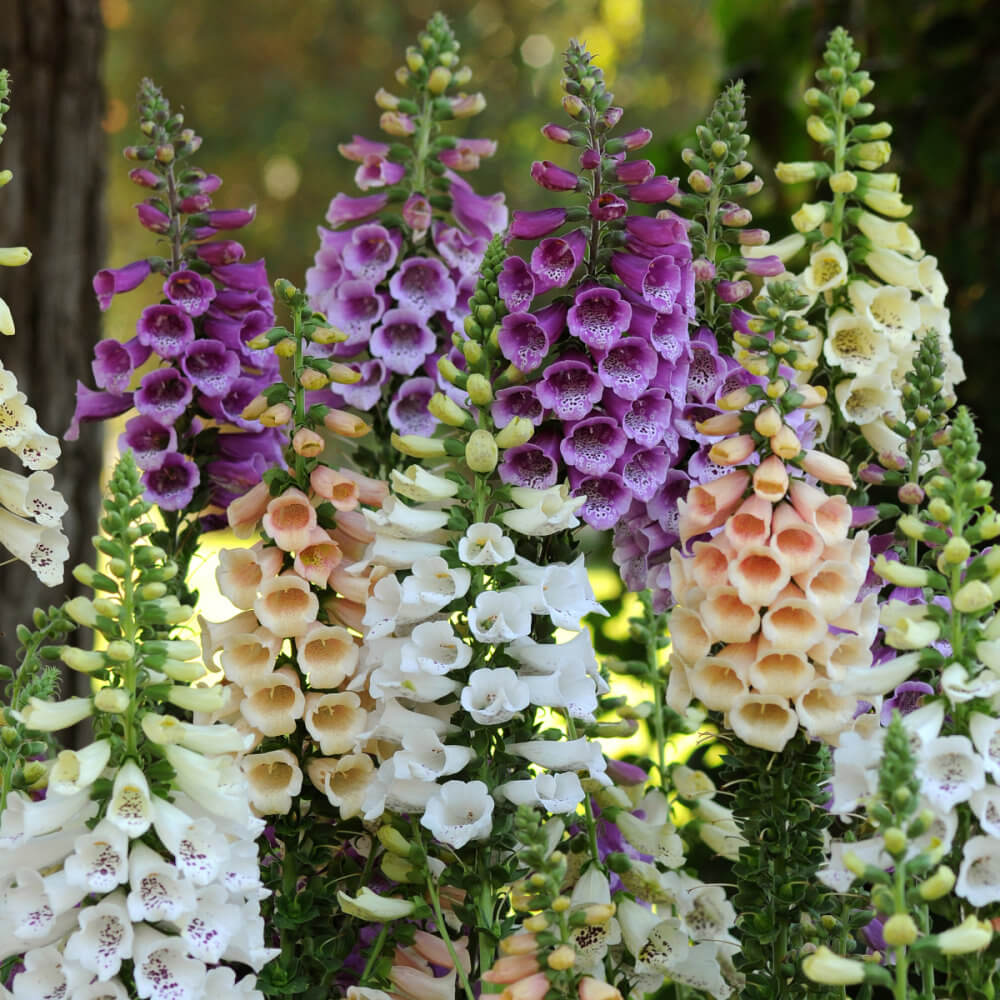

Foxgloves
General Information
Foxgloves are biennials with tall spikes of tubular flowers. They are beautiful but toxic if eaten.
Where They Grow
Sun: Partial shade.
Soil: Moist, rich, well-drained.
Climate: Cool or temperate climates.
Home Care & Tips
- Keep soil consistently moist.
- Remove spent flower spikes to encourage new growth.
- Wear gloves when handling (toxic sap).
Recommended Home Locations
- Shaded or part-shade garden areas.
- Woodland-style corners.
- Large outdoor containers.
- Not for indoor growing (toxic + tall).